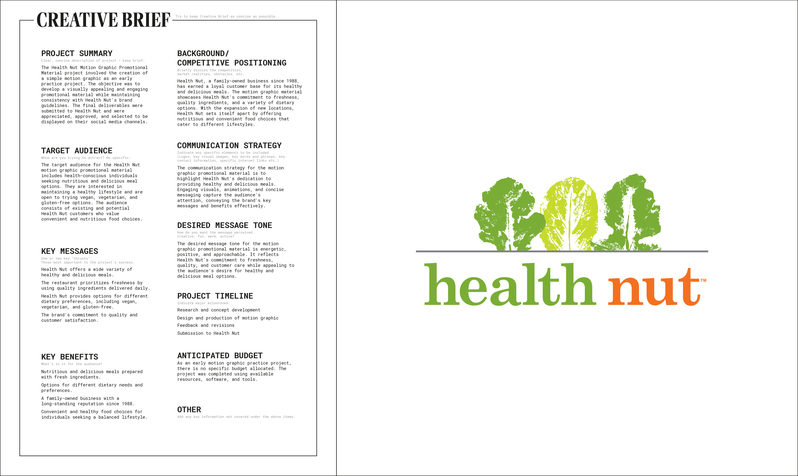

The Health Nut Motion Graphic Promotional Material project involved the creation of a simple looping motion graphic as an early practice project. The objective was to develop a visually appealing and engaging promotional material while maintaining consistency with Health Nut's brand guidelines. The final deliverables were submitted to Health Nut and were appreciated, approved, and selected to be displayed on their social media channels.